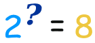
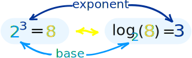
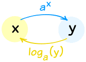
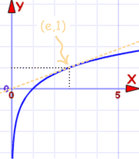
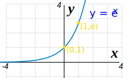
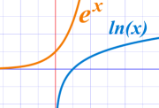
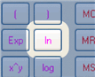
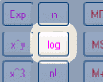
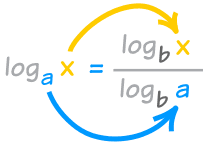
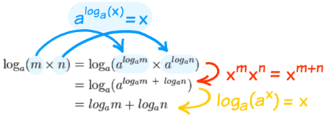

Working with Exponents and Logarithms
What is an Exponent?
 |
The exponent of a number says how many times In this example: 23 = 2 × 2 × 2 = 8 (2 is used 3 times in a multiplication to get 8) |
What is a Logarithm?
A Logarithm goes the other way.
It asks the question "what exponent produced this?":

And answers it like this:

In that example:
- The Exponent takes 2 and 3 and gives 8 (2, used 3 times in a multiplication, makes 8)
- The Logarithm takes 2 and 8 and gives 3 (2 makes 8 when used 3 times in a multiplication)
A Logarithm says how many of one number to multiply to get another number
So a logarithm actually gives you the exponent as its answer:

(Also see how Exponents, Roots and Logarithms are related.)Working Together
Exponents and Logarithms work well together because they "undo" each other (so long as the base "a" is the same):

They are "Inverse Functions"
Doing one, then the other, gets you back to where you started:
It is too bad they are written so differently ... it makes things look strange. So it may help to think of ax as "up" and loga(x) as "down":
Anyway, the important thing is that:
The Logarithmic Function is "undone" by the Exponential Function.
(and vice versa)
Like in this example:
Example, what is x in log3(x) = 5
We want to "undo" the log3 so we can get "x ="
And also:
Example: Calculate y in y=log4(1/4)
Now a simple trick: 1/4 = 4−1
Properties of Logarithms
One of the powerful things about Logarithms is that they can turn multiply into add.
loga( m × n ) = logam + logan
"the log of multiplication is the sum of the logs"
Why is that true? See Footnote.
Using that property and the Laws of Exponents we get these useful properties:
| loga(m × n) = logam + logan | the log of multiplication is the sum of the logs |
| loga(m/n) = logam − logan | the log of division is the difference of the logs |
| loga(1/n) = −logan | this just follows on from the previous "division" rule, because loga(1) = 0 |
| loga(mr) = r ( logam ) | the log of m with an exponent r is r times the log of m |
Remember: the base "a" is always the same!
History: Logarithms were very useful before calculators were invented ... for example, instead of multiplying two large numbers, by using logarithms you could turn it into addition (much easier!)
And there were books full of Logarithm tables to help.
Let us have some fun using the properties:
Example: Simplify loga( (x2+1)4√x )
That is as far as we can simplify it ... we can't do anything with loga(x2+1).
Answer: 4 loga(x2+1) + ½ loga(x)
Note: there is no rule for handling loga(m+n) or loga(m−n)
We can also apply the logarithm rules "backwards" to combine logarithms:
Example: Turn this into one logarithm: loga(5) + loga(x) − loga(2)
Answer: loga(5x/2)
The Natural Logarithm and Natural Exponential Functions
When the base is e ("Euler's Number" = 2.718281828459...) we get:
- The Natural Logarithm loge(x) which is more commonly written ln(x)
- The Natural Exponential Function ex
And the same idea that one can "undo" the other is still true:
ln(ex) = x
e(ln x) = x
And here are their graphs:
Natural Logarithm |
Natural Exponential Function |
|
|  |  | |
| Graph of f(x) = ln(x) | Graph of f(x) = ex |
|
Passes through (1,0) and (e,1) |
Passes through (0,1) and (1,e) |

They are the same curve with x-axis and y-axis flipped.
Which is another thing to show you they are inverse functions.
|  | On a calculator the Natural Logarithm is the "ln" button. |
Always try to use Natural Logarithms and the Natural Exponential Function whenever possible.
The Common Logarithm
When the base is 10 you get:
- The Common Logarithm log10(x), which is sometimes written as log(x)
Engineers love to use it, but it is not used much in mathematics.
|  | On a calculator the Common Logarithm is the "log" button. It is handy because it tells you how "big" the number is in decimal (how many times you need to use 10 in a multiplication). |
Example: Calculate log10 100
Well, 10 × 10 = 100, so when 10 is used 2 times in a multiplication you get 100:
log10 100 = 2
Likewise log10 1,000 = 3, log10 10,000 = 4, and so on.
Example: Calculate log10 369
OK, best to use my calculator's "log" button:
log10 369 = 2.567...
Changing the Base
What if we want to change the base of a logarithm?
Easy! Just use this formula:

"x goes up, a goes down"
Or another way to think of it is that logb a is like a "conversion factor" (same formula as above):
loga x = logb x / logb a
So now we can convert from any base to any other base.
Another useful property is:
loga x = 1 / logx a
See how "x" and "a" swap positions?
Example: Calculate 1 / log8 2
1 / log8 2 = log2 8
And 2 × 2 × 2 = 8, so when 2 is used 3 times in a multiplication you get 8:
1 / log8 2 = log2 8 = 3
But we use the Natural Logarithm more often, so this is worth remembering:
loga x = ln x / ln a
Example: Calculate log4 22
My calculator doesn't have a "log4" button ... ... but it does have an "ln" button, so we can use that: |
What does this answer mean? It means that 4 with an exponent of 2.23 equals 22. So we can check that answer:
Check: 42.23 = 22.01 (close enough!)
Here is another example:
Example: Calculate log5 125
I happen to know that 5 × 5 × 5 = 125, (5 is used 3 times to get 125), so I expected an answer of 3, and it worked!
Real World Usage
Here are some uses for Logarithms in the real world:
Earthquakes
The magnitude of an earthquake is a Logarithmic scale.
The famous "Richter Scale" uses this formula:
M = log10 A + B
Where A is the amplitude (in mm) measured by the Seismograph
and B is a distance correction factor
Nowadays there are more complicated formulas, but they still use a logarithmic scale.
Sound
Loudness is measured in Decibels (dB for short):
Loudness in dB = 10 log10 (p × 1012)
where p is the sound pressure.
Acidic or Alkaline
Acidity (or Alkalinity) is measured in pH:
pH = −log10 [H+]
where H+ is the molar concentration of dissolved hydrogen ions.
Note: in chemistry [ ] means molar concentration (moles per liter).
More Examples
Example: Solve 2 log8 x = log8 16
But ... but ... but ... you cannot have a log of a negative number!
So the −4 case is not defined.
Answer: 4
Check: use your calculator to see if this is the right answer ... also try the "−4" case.
Example: Solve e−w = e2w+6
Answer: w = −2
Check: e−(−2)= e2 and e2(−2)+6=e2
Footnote: Why does log(m × n) = log(m) + log(n) ?
To see why, we will use and :
| First, make m and n into "exponents of logarithms": | |
|  |
Then use one of the Laws of Exponents Finally undo the exponents. |
It is one of those clever things we do in mathematics which can be described as "we can't do it here, so let's go over there, then do it, then come back"